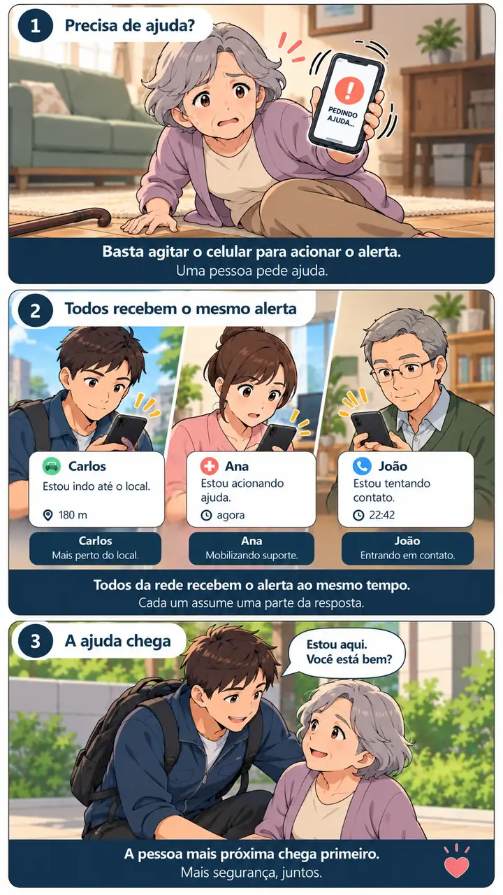

O que a família está procurando
Quando um pai, uma mãe ou um avô passa a morar sozinho, a família costuma procurar um “botão de pânico”: um jeito de a pessoa pedir ajuda rápido se cair, passar mal ou se sentir em perigo.
No mercado, esse pedido aparece de três formas: um aplicativo no celular, uma pulseira ou botão que avisa a família e uma central de teleassistência 24 horas com atendente. As três ajudam. A diferença está em quem recebe o aviso e em quem consegue chegar.
No minuto seguinte ao pedido de ajuda, quem vai abrir a porta? Um aviso que não leva alguém até o local resolve só metade do problema.
1. Pulseira ou botão que avisa a família
É um pequeno aparelho usado no pulso, no pescoço ou preso na parede. Ao apertar, ele envia um aviso para o celular dos familiares, em geral pela internet da casa ou por um chip.
Bom para
Quem não usa celular ou tem dificuldade com telas. O botão é simples e fica no corpo.
Atenção
Só funciona se estiver no corpo (inclusive no banho e à noite), com bateria e dentro do alcance da internet ou do sinal. É mais um aparelho para comprar e manter.
2. Central de teleassistência 24 horas
A pessoa usa um botão ou pulseira ligado a uma central com atendentes. Quando ela aperta, um atendente fala com ela e decide o próximo passo: ligar para a família, orientar ou chamar socorro.
Bom para
Quem não tem família ou vizinhos por perto, ou precisa de alguém que atenda a qualquer hora e organize a resposta.
Atenção
Tem mensalidade e aparelho. A central atende, mas na maioria dos casos quem chega é alguém da família ou um serviço chamado por ela, e isso leva mais uma ligação.
3. Aplicativo no celular com rede de apoio
O próprio celular vira o botão. Ao pedir ajuda, o aviso vai ao mesmo tempo para várias pessoas de confiança (filhos, netos, vizinhos, amigos), com a localização. Os bons aplicativos permitem pedir ajuda sem procurar o contato e sem navegar por telas.
Bom para
Quem já usa celular Android e tem pessoas de confiança por perto, mesmo que não morem junto. Não exige aparelho extra.
Atenção
O celular precisa estar carregado e por perto. Vale escolher um app que funcione mesmo com a tela apagada e sem precisar tocar no aparelho.
Comparação rápida
| Pergunta | Pulseira ou botão | Central 24h | App com rede |
|---|---|---|---|
| Precisa comprar aparelho? | Sim | Sim | Não, usa o celular |
| Quem recebe o aviso? | Familiares cadastrados | Um atendente | Várias pessoas de confiança ao mesmo tempo |
| Quem vai até o local? | A família se organiza | Quem a central conseguir chamar | Quem está mais perto, combinado na hora: toda a rede vê quem está indo até o local |
| Custo | Compra do aparelho | Mensalidade | Assinatura do app |
| Funciona sem smartphone? | Sim | Sim | Não |
Não existe opção perfeita para todos. Para quem não usa celular, a pulseira ou a central fazem mais sentido. Para quem usa celular e tem pessoas por perto, o app com rede costuma ser o caminho mais rápido até a ajuda chegar.
Por que a rede faz diferença
Em quase toda emergência em casa, quem resolve é alguém que consegue chegar em poucos minutos: o vizinho, o filho que mora no bairro, a amiga do prédio. Quando o aviso vai direto para essas pessoas, ninguém precisa repassar a notícia. Quando vai para uma só pessoa, tudo depende de ela atender naquele momento.
Uma rede bem combinada tem três papéis: quem está mais perto e pode ir, quem acompanha e avisa os outros e quem chama o serviço de emergência se for o caso. O guia como criar uma rede de apoio para um idoso mostra como montar isso.
O SOS Farol é um app com rede de apoio
A pessoa pede ajuda de três jeitos: agitando o celular ou falando uma palavra-código (a até 3 metros), as duas com a tela apagada, ou pelo botão do app, com a tela acesa. Familiares e amigos da rede recebem a localização e um áudio de 20 segundos, e combinam quem vai até o local.
Funciona em celulares Android 11 ou superior, não em iPhone. É uma ferramenta complementar de comunicação e não substitui o 192 (SAMU) ou o 190 (Polícia).
Como escolher em 5 perguntas
- A pessoa usa celular no dia a dia? Se não usa, prefira pulseira ou central.
- Há alguém que chega em até 15 minutos? Se sim, uma rede que receba o aviso direto é o caminho mais curto.
- Ela aceita usar um aparelho no corpo o tempo todo? Pulseira esquecida na gaveta não protege.
- Ela conseguiria pedir ajuda caída, sem alcançar o aparelho? Prefira opções por voz ou que não dependam de tocar na tela.
- A família testou? Faça um teste real com todos antes de confiar: quem recebeu, quanto tempo levou, quem iria.
Escolha pela situação real da pessoa e pelas pessoas que podem chegar, não pela lista de recursos.